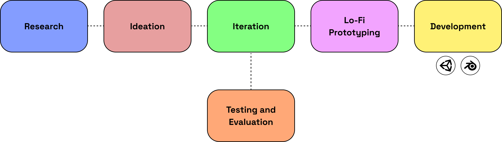
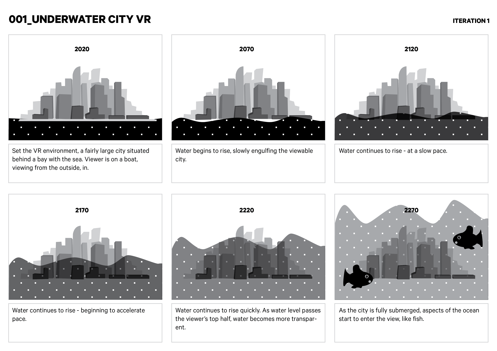
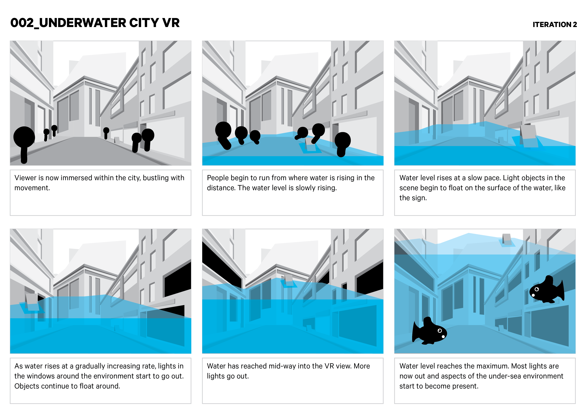
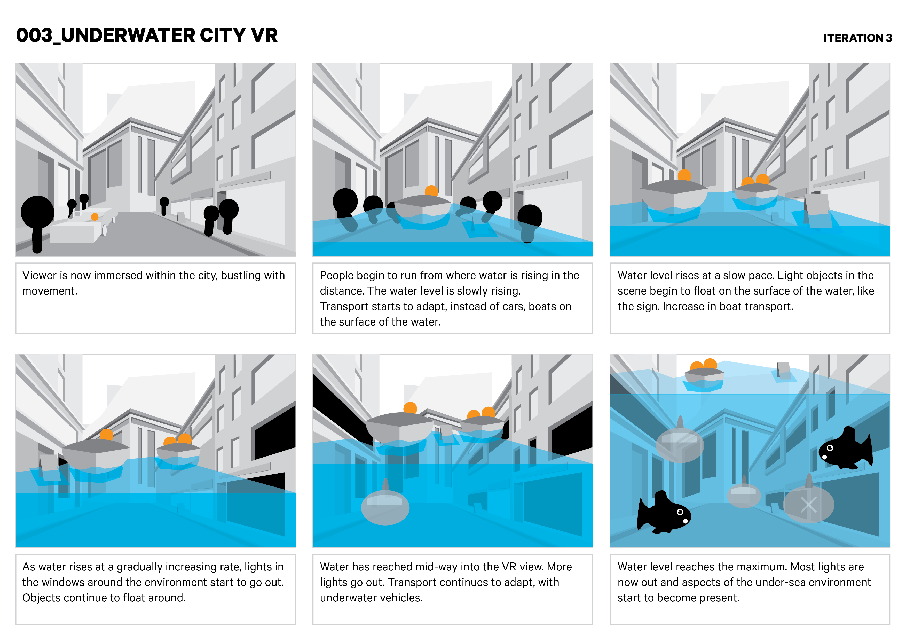
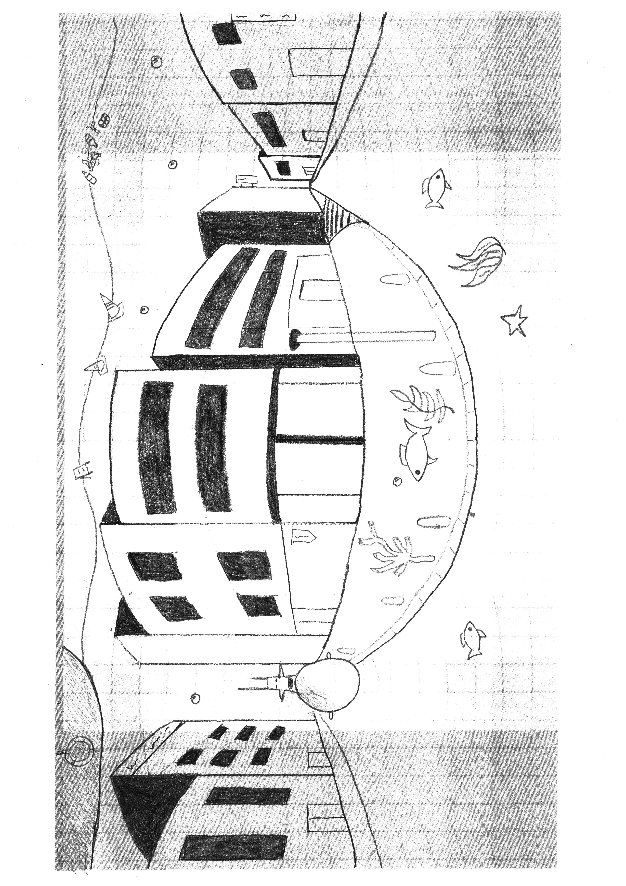
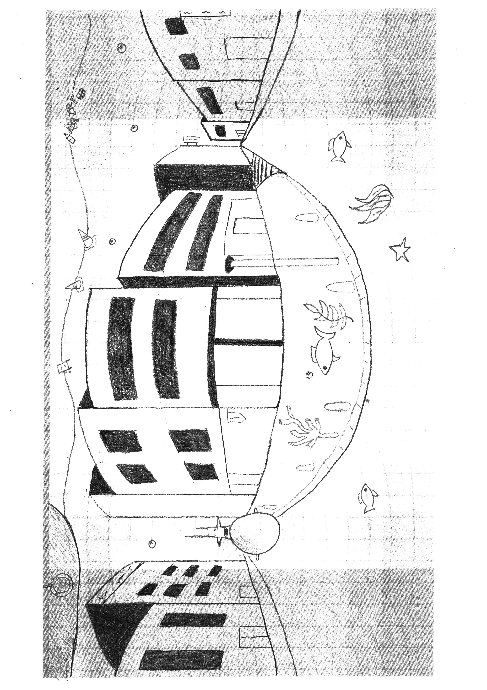

Role: VR Programmer
Timeline: 3 Months (Apr - Jun 2020)
Tools: Blender, Unity3D
Overview
To address the issue of climate change is to educate people. USYD underwater is a VR application concept that focuses on the user's effects on the environment through their choices. The user is placed in a city environment that is gradually flooded by water. It showcases the effects of climate change but allows the user to reduce the effects through a gamified approach. To provide a more immersive experience, USYD underwater was created. This project was designed for the Designing for Virtual Reality class.
Context
The growing impact of climate change on society has been more evident in the past decade. Rising sea levels are predicted over the next few decades as a product of climate change. Cities will be flooded and, possibly be completely submerged by water. From various research methods, individuals were aware of climate change but did not fully grasp the potential dangers.
Design Process
Research
Existing Solutions
Look Ahead San Francisco (Hills-Duty, 2017) is a campaign between the City and County of San Francisco which highlights the impacts of melting polar ice caps on the city’s most iconic locations. The 360° virtual reality app portrays the city in 3 different environments; the current water level and the future where climate action has and has not been taken. The app also provides information on how to reduce flooding risk, cutting carbon emissions and switching to renewable energy supplies. The launch of the climate campaign and virtual reality app provides a new way for San Francisco to raise awareness about the future sea level rise while involving community members in efforts to increase resilience and meet climate action.
Singapore Underwater (Singapore underwater) is a virtual reality simulation that delves into the global projection of rising sea levels. It places you at the base of the Merlion statue overlooking Marina Bay and compares the current water level of Singapore contrasted to Singapore in the year 2500 where the water level has risen by 6 meters based on scientific projection. Not only does it depict the enormous impact of climate change on Singapore but also educates the user on how Singapore might try to mitigate against rising seas and the possible impact of land loss and saltwater contamination of the country's farmland and reservoirs.
Sea Level Rise Explorer (Virtual Planet Technologies LLC) is a virtual reality simulation that allows us to experience the familiar coastlines of Santa Cruz being inundated by rising sea levels and storm surge. It depicts 3 locations in Santa Cruz and for each location the user can experience the sea level in 2018, during a king tide and a projection of 2.4 feet of sea level rise in combination to a 100-year storm. By using the application, users are able to visualise complex coastal issues in a fully immersive and interactive environment.
Each existing solution successfully creates an immersive experience for the user while highlighting the detrimental effects of climate change on the polar ice caps and in turn rising sea levels. Although Look ahead San Francisco and Singapore Underwater successfully convey the impact well but fail to capitalise on the utilisation of VR application, like aspects of interactivity and gamification.
Ideation
There were 3 concepts that focused on climate change that we created: a domed city, bushfires and glaciers melting.
The domed city depicted a city where air pollution has forced human civilisation to take refuge under a dome to live. This concept focused on a dystopia of a dusty and harsh future of lack of nature. Trees would look withered and houses simple (due to lack of resources).
Bushfires burning took inspiration from the Australian bushfires at the beginning of 2020. As this resembled a real-life occurrence, it would be more understanding to users. The dark and dusty skies and poor air would be illustrated for the users to be reminded of rough climate conditions. The user would see their entire surroundings burn and see their homes and belongings scorched by the fires.
Glaciers melting is a current issue that is occurring globally. The user would be placed on an ice glacier where it would slowly melt underneath their feet until they fell into the water and had to swim. As society is aware of the rising water levels, majority of us truly experience the consequences of it.
VR App Design Concept
Our VR app concept places the viewer in a virtual environment where they are able to freely interact and explore the environment. The VR environment will include a city that is gradually being flooded by water to create an immersive experience. It showcases the effect of climate change of melting glaciers and rising sea levels on a modern city. The VR app concept depicts the actions and consequences of the user to educate them on the effects of climate change. These interactions will inform users methods in which they are able to reduce the effects of climate change.
Iteration
Experiential Aspects
The main aspect of the VR concept incorporates the effect of flooding, as a result from rising sea levels, on a city that will gradually be immersed by the water. Gamification aspects are incorporated into the environment which encourages the user to slow down the process of climate change. An aspect that will be implemented was a bar on the user’s screen that displays the climate change process. This bar would play a role on giving feedback to the user to help assist them in maintaining the levels of impact of climate change on the city. The rising sea levels would be based on the user’s interactions with the environment. The user would be able to interact with objects that have an increasing influence on climate change such as reducing waste via recycling, switching their cars to electric motors or switching to renewable energy. Other experimental aspects to this project include the adaptation of the assets in the world around the user, from buildings to cars, boats and even submarines.
Target User Groups
The target user group that the VR app concept is aimed at people in the 20-40 year age group. We have selected this target user group for our VR app concept as they have the biggest influence in mitigating climate change issues as well as having the opportunity to educate the future generation on reduce carbon emissions.
First Iteration
Interviews
From the first batch of interviews, we found that many people were aware of the impact of climate change on the planet and the dangers it possesses in the present and future. Wirdjinata, E. (2020) stated in an interview that he believes that in the future, there will be higher sea levels and some cities, such as Venice, will be completely submerged underwater. Mendoza, I. (2020) also stated in the interview that climate change would completely change the way society functioned where cities would be entirely submerged underwater and boats and submarines were the primary modes of transport.
First Iteration Testing and Evaluation
Our first set of design iterations began with our sketches of our proposed establishing city view, which we incorporated into our first storyboard. To begin, we wanted to test if this idea would prove to be a valid use for VR, in accordance with our underwater city concept. We tackled this initially by putting the user in the shoes of a tourist on a boat, viewing the conceptual changes that occur to a city over time, as the sea levels rise.
From our first set of testing, we came to realise several key points raised that we needed to iterate on.
- It needed to be more immersive - While the ‘outside-in’ view we proposed in the storyboard communicated the concept, users consistently asked if they could move around, or be within the city, seeing the water engulf them. Additionally, our ‘outside-in’ view gave users a confusing interpretation of scale. This led to discussion about the underwater city concept like an AR tabletop game.
- It needed more interactivity and moving objects - While our users enjoyed the idea of this VR ‘demo’, it was clear that the storyboard only communicated a static viewing position.
Second Iteration
Second Iteration Testing and Evaluation
In our second iteration, we began with storyboards that put the user at ground zero, surrounded by 1:1 scale buildings, streets and objects. We also wanted to better communicate how movement played a role, especially when people start to run from certain areas, to increase immersiveness and a sense of danger. Continuing our testing, we found that this concept better communicated the immersive potential of an underwater city in VR. Additionally, the idea of lights turning off as the water rose added to an associated impact of rising sea levels.
- The streets might be empty with just people and the same buildings - To further increase immersiveness, we realised that placing the user in the middle of a street seemed a bit out of the ordinary, in addition to certain assets, like cars, on the street.
- Moving objects are great but need more interactivity - While the idea of floating objects, like signs, add more potential to interacting with the surrounding environment, the scene needs more aspects of interactivity that change certain aspects of the scene; perhaps actions that could slow or speed up the rate of rising sea levels?
Final Concept
Summary of Findings
In summary, sea levels are predicted to continue to rise over the next few decades as a product of climate change, and this will cause major shifts in how society will and should adapt. Additionally, we can also identify that there is a psychological barrier that exists between people and climate change. This barrier has led to a significant percentage of the world’s population who prefer to live in the moment, satisfying immediate needs above planning for a better future; akin to present bias. The use of virtual reality and its potential applications blurs the distinction between reality and a virtual world; one that we can use in a highly effective manner to build and bridge this psychological gap.
This utilisation of VR currently exists in the market, but we’ve identified that while they exist as fantastic VR applications that communicate the impact of rising sea levels well, they fail to capitalise on the full utilisation of VR that separates this technology from 360° video. Namely, these aspects of VR are direct interactivity and gamification; two aspects that are heavily influential in shifting human perception and empathy.
Our underwater city VR application aims to bridge this psychological gap and help make individuals more aware of the effects of climate change and rising sea levels; in addition to the potential dangers and adaptations society may have to make in order to overcome them.
Low-Fidelity Sketches
 

Design Solution
USYD Underwater is a VR application concept where the user is placed on the main university campus that is gradually being flooded. The user is able to reduce or stop the flooding through the choices they make in the immersive experience. The virtual reality application showcases the effects of climate change while also depicting the roles of individual actions.
Click here to access USYD UnderwaterEvaluation of Solution
Setup
Users will need to have a smartphone device or computer which is able to access the internet. They will also need to have access to the WebVR link which will take them to the VR prototype when clicked. If users are viewing the prototype from their computer, they can move around using the ‘WASD’ or arrows keys and their mouse to look around . If they are viewing it from their phone, they can do the same by scrolling their finger across the screen. If the user wishes to view the environment in VR, they will need to use a VR headset such as a Google Cardboard and tap the ‘VR’ icon to switch modes.
External Assets
- Sounds - We used a simple city soundtrack to be played in an audio loop when the user enters the environment. This enhances the immersion of the scene.
- Plugins - We used the Blender-osm plugin (Prochitecture, 2020) which allowed us to import geographical data from OpenStreetMap into our Blender scene. From this, we were able to know the rough estimate of buildings shapes and their relative position in the environment as well as the size of roads and pathways. In accompaniment with the Blender-osm plugin, we also used the building tool plugin for blender. Using the outline of building shapes from Blender-osm, we used the Building Tools plugin (Ranjian & Luckykadam, 2020) which enabled us to create floors and easily generate windows and doors. This allowed us to focus more on the details of the building and make the Eastern Avenue environment more recognisable.
- Unity (Standard Assets) - We used the water asset from the Unity Standard Assets for the environment where it would rise and fall based on conditions.
Known Issues
- Building Textures - Due to the building tool plugin for Blender being in alpha development, textures didn’t apply to buildings while in Unity. As a result, we applied simple materials to the buildings instead. Furthermore, when applying a transparent material like glass to the surface of a building, the walls on the interior of the building disappeared when viewing it from head on.
- Gravity - We used the FBX Controller in Unity to allow the user to walk around the environment, however, we came across an issue which prevented gravity from applying to the scene. As a result we had to disable it so the user now freely controls the camera, which may look like they’re flying.
- Flickering Boats - A boat script had to be incorporated with the rising water script to create a realistic atmosphere and feel of the objects. As the water rose, the boats rose. However when the boats reached the max water limit, it flicked to a different position. It only flicked the x and z positions when the boats reached the max water limit but the x and z positions remained static when rising and falling.
- Mesh Colliders - Each of the structures had its own mesh collider which would prevent the user from being able to go through the object, however, the gaps between each structure also blocked the user from walking through. Mesh colliders were applied to the vehicles and bicycles but the user was still able to go through them.
Future Works
There were many ideas that were planned to be implemented but, due to time constraints, only the main functions were implemented into the virtual reality environment. Some future considerations include:
- Underwater effects - An underwater post-process effect was applied to the environment but there were many issues involving the timing of the effect and sudden disability as it was further iterated. It would be a future consideration to implement properly as it would provide a more immersive experience for the user. The earlier use of the post-process utilised a fog and blue saturation that was triggered by a mesh collider but as iterations occurred along the way, the underwater effects no longer worked.
- Human Animation - The human objects all walk at the same pace and same direction due to them being a part of a parent game object. The decision to be a part of a parent game object stemmed from time constraints as individually scripting each human would be time consuming. There were another two animations that were created for the humans which were their idle and running state. These two animations would have been triggered by certain conditions but, as mentioned before, time constraints forced us into using only the walk animation. Utilising all the animations for the humans would be ideal for the future to create a more interactive environment for the user.
- Skybox - A skybox atmosphere could be added to the environment to create a wider scene for the user.
- Buttons - For future works, the UI buttons could be translated onto the game objects to incentivise the user to explore the environment. For example, the change car button would be placed onto each individual car and the change bike button would be placed onto each individual bike. This would create more conditions for the water to rise and fall.
- Extra factors - In the later iterations of the VR environment, there was a third function implemented which allowed the user to grow trees to reduce the water rising. Multiple attempts were taken to create this function, however due to time constraints, the final iteration idea could not be created properly and was removed. Other suggestions towards factors included installation of solar panels around USYD and recycling around the environment. These factors would be a future work as it would provide more gamification to the environment to educate the user in climate change impact.